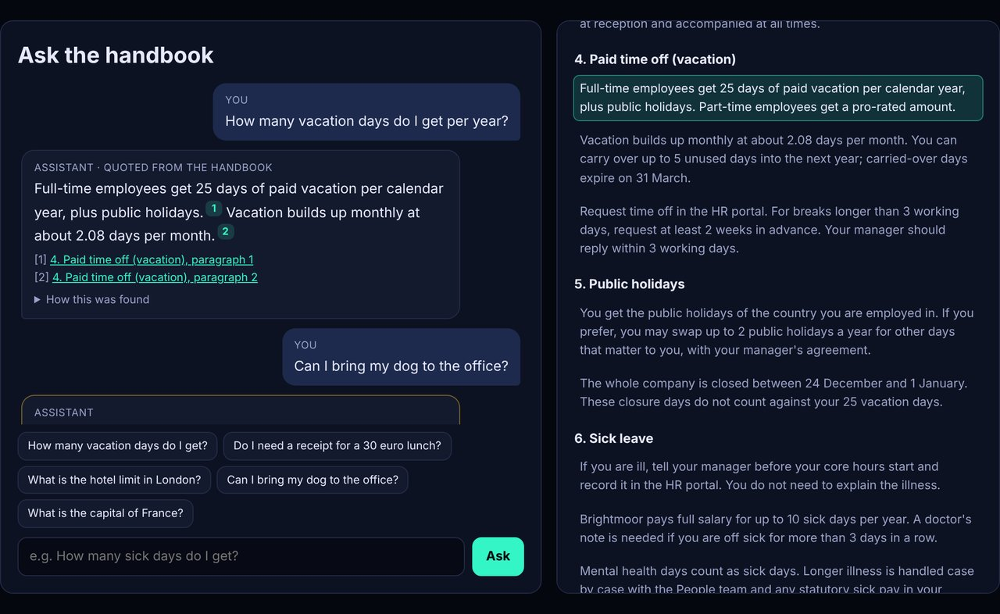

Demo build, no client
Handbook assistant: RAG with citations, "I don't know" and a live eval panel
Problem
Companies want staff to get answers from their own documents, but they worry about two failures. One is the bot confidently making up a policy. The other is that nobody can tell how often it's right. Most chatbot demos show a nice conversation and skip both. This demo puts both problems up front.
Build
- Knowledge base: a fictional 22-section employee handbook for "Brightmoor Labs", split into 53 paragraph-sized chunks.
- Retrieval: BM25 ranking with stemming, stop-words and a small hand-written synonym list for the domain (for example PTO to vacation, 2FA to MFA). It runs entirely in the browser.
- Answers: extractive. The assistant picks the best one or two sentences from the top passages of the same section and quotes them word for word, with numbered citations that scroll to and highlight the source paragraph.
- "I don't know" gate: it refuses when the top BM25 score is below 3.0, or when the best section covers less than half of the question's key words. The reason and the scores are shown under every answer.
- Eval panel: 34 questions (26 answerable, 8 not covered by the handbook). An answerable question passes only when the first citation is the right section and the answer contains the expected fact. An uncovered question passes only when the assistant says it doesn't know.

Result (measured on 31 Oct 2026 (IST))
The one failure is left visible on purpose. "I clicked a phishing link, who do I tell?" gets refused, because "clicked", "link" and "tell" don't appear in the handbook, so keyword retrieval can't connect them to the security section. It errs on the side of "I don't know" rather than guessing, which is the behaviour we wanted, but it's still a miss. Embeddings or an LLM query rewrite would fix this kind of paraphrase in a client build. The eval questions were written alongside the handbook, so treat the score as a regression check, not an independent benchmark. Lighthouse desktop: 100/100/100/100.
Stack
Plain JavaScript with no dependencies: a BM25 retriever and answer extractor (rag.js, about 10 KB), a JSON knowledge base and an eval set. The same engine runs in Node for scripted evals. Hosted on GitHub Pages. Tested with Puppeteer and Lighthouse.
A client build would typically use embeddings in a vector store (pgvector, Qdrant or similar) with hybrid BM25 plus vector search, an LLM (OpenAI, Claude or a local model) told to answer only from the retrieved passages, and the same citation, refusal and eval checks running in CI.